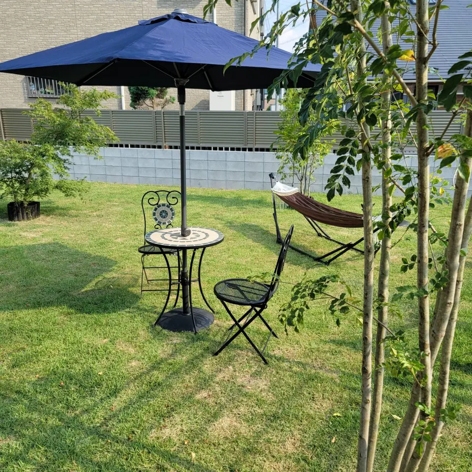

VISIT UMIKAZE
お出かけの前に。
季節の移り変わりに合わせて、営業時間が変わります。
本日の営業は、Instagramのお知らせをご確認ください。
OPENING HOURS
営業時間
定休日：火曜日
10–6 10月〜6月
- 水・木・日
- 11:00〜19:30L.O. 19:00
- 月・金・土
- 11:00〜21:00L.O. 20:30
7–9 7月・8月・9月
- 朝の営業
- 6:00〜9:00
- 夕方の営業
- 17:00〜21:00L.O. 20:30
火曜日を除く
上記は基本の営業時間です。気温・天候により変更する場合があります。特に6月・10月は変動しやすいため、最新の営業日・時間をInstagramでご確認ください。
本日の営業を確認する
PARKING & DIRECTIONS
お車でお越しの方へ。
駐車場は、縦列駐車でお願いします。
店舗入口に駐車場がございます。スペースを譲り合って、縦列にお停めください。停め方に迷った場合は、スタッフにお声がけください。
店舗前の細い路地は、ゆっくりと。
関越道・東松山インター近く。マクドナルド東松山石橋店が目印の交差点からお入りください。店舗前の路地は細いため、お気をつけてお越しください。
駐車場の案内をInstagramで見るRESERVATION & CONTACT
ご予約・お問い合わせ
お電話でのご予約を優先して承ります。
グループでのご利用は、事前にご相談ください。
お支払いについて
現金・クレジットカード・交通系IC・PayPayをご利用いただけます。
TODAY AT UMIKAZE